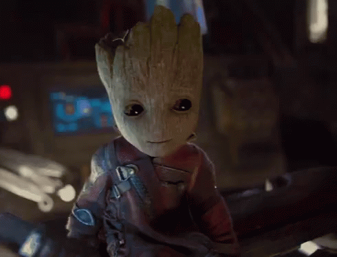

About Groot
Groot is so cute (almost as Igorozu)! He is a sentent alien tree branches out of his comfort zone to help the Guardians of the Galaxy keep the people of the universe safe!
Groot and the Guardians
Groot`s Characteristics
- He is a lovely sweet loyal tree
- Tecnically he is a Floral Colossus
- He can only say `I am Groot` in different tones
Groot`s Friends
Groot has great friends. His best friends are Frabbrozzo and Igorozu. Click on the link below to learn more about them: